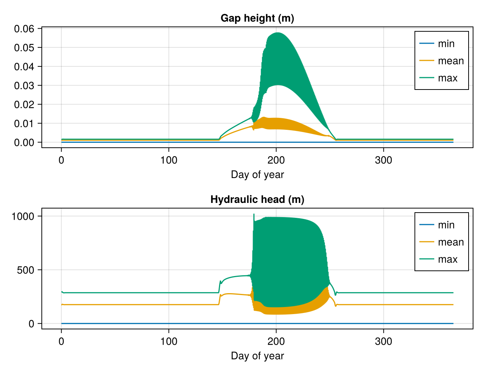
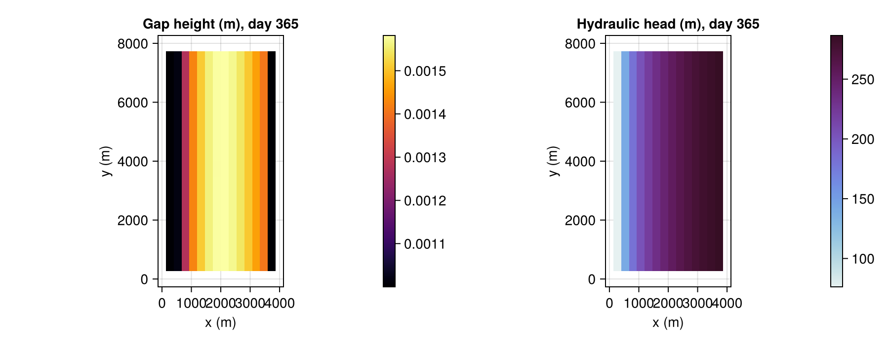

Seasonal melt input
A small, fast-running version of Sect. 3.3 of Sommers, Rajaram & Morlighem (2018) (https://doi.org/10.5194/gmd-11-2955-2018), "Seasonal variation and distributed meltwater input": a synthetic slab geometry, spun up under a steady winter melt rate, then driven for one year by SeasonalMeltInput's cosine-shaped melt-season cycle – showing how gap height and hydraulic head respond as the system channelizes and relaxes with the seasons.
using Shakti
using CairoMakie
using Random
using StatisticsGeometry
A small synthetic domain: flat bed, ice surface parabolic in x (thin near the outflow at x=0, thickening upglacier), uniform in y – the same synthetic setup the paper uses for this experiment (Table 2), just at a coarser grid/timestep so this example runs quickly.
const NX, NY = 16, 16
const LX, LY = 4000.0, 8000.0 # 4 km x 8 km, matching the paper's domain
grid = Grid(NX, NY, LX, LY)
zb = zeros(NX, NY)
H0, H1 = 550.0, 700.0 # ice thickness at x=0 / x=Lx (m), the paper's endpoints
Hx = sqrt.(H0^2 .+ (H1^2 - H0^2) .* (grid.x ./ LX)) # zb=0, so surface elevation == thickness
zs = repeat(Hx, 1, NY)
fig_geom = let
fig = Figure(size = (450, 350))
ax = Axis(fig[1, 1], title = "Ice surface elevation (m)", xlabel = "x (m)", ylabel = "y (m)")
hm = heatmap!(ax, grid.x, grid.y, zs)
Colorbar(fig[1, 2], hm)
fig
end
fig_geom
Mask and boundary conditions
Outflow at x=0 (LAND: Dirichlet head = 0, i.e. atmospheric pressure); the other three edges are zero-flux (OTHER_BASIN).
mask = fill(GROUNDED, NX, NY)
mask[1, :] .= LAND
mask[end, :] .= OTHER_BASIN
mask[:, 1] .= OTHER_BASIN
mask[:, end] .= OTHER_BASIN16-element view(::Matrix{Int64}, :, 16) with eltype Int64:
3
3
3
3
3
3
3
3
3
3
3
3
3
3
3
3Physical parameters and initial gap height
Zero englacial storage (e_v = 0, required by EllipticHeadScheme, and the paper's own choice too). Initial gap height 0.01 m plus 1% noise, to seed channelization instabilities.
p = ModelParameters(e_v = 0.0, b_min = 1e-3)
A_visc = fill(5e-25, NX, NY)
G = fill(0.05, NX, NY)
ub_x = fill(1e-6, NX + 1, NY)
ub_y = zeros(NX, NY + 1)
sl = RegularizedCoulombSlidingLaw(0.25)
taub_x = zeros(NX + 1, NY) # unused: RegularizedCoulombSlidingLaw recomputes taub from N/ub every Picard iteration
taub_y = zeros(NX, NY + 1)
rng = Random.MersenneTwister(1)
b = fill(0.01, NX, NY) .* (1 .+ 0.01 .* randn(rng, NX, NY))16×16 Matrix{Float64}:
0.00998631 0.0101345 0.0100949 … 0.0101314 0.00997222 0.0101056
0.010096 0.00984284 0.0099549 0.0099242 0.0100339 0.0100715
0.00992409 0.0100164 0.00998706 0.0100839 0.0100626 0.010107
0.00986612 0.00998239 0.00989442 0.0100313 0.0100079 0.0099263
0.00977839 0.0097914 0.0101181 0.0100736 0.00996858 0.0099713
0.0101048 0.0100954 0.00992203 … 0.00993322 0.00994609 0.00998035
0.0100836 0.00981856 0.0101434 0.0100336 0.00989697 0.0100203
0.00999339 0.00980113 0.00975919 0.00999103 0.0102313 0.0100611
0.0100257 0.0102358 0.01012 0.0100008 0.010011 0.00989723
0.00993667 0.00994785 0.00998284 0.00987732 0.0100355 0.00973556
0.0100389 0.0100403 0.0099052 … 0.0102615 0.0100065 0.0100307
0.0102105 0.00985945 0.0100976 0.0100557 0.00995786 0.0101816
0.010052 0.0100609 0.00990619 0.00993971 0.0100526 0.0101372
0.0102704 0.0100377 0.0101683 0.0100477 0.010057 0.00990868
0.00983352 0.0100101 0.0100191 0.00992425 0.0099964 0.00999518
0.0097549 0.00982738 0.00997947 … 0.00985425 0.00997994 0.0101541Spin-up
A short spin-up under a steady 1 m/yr distributed melt input, reaching a reasonable starting state before switching on the seasonal cycle.
const SECONDS_PER_YEAR = 365 * 86400.0
mi_spinup = ConstantMeltInput()
ieb_spinup = fill(1.0 / SECONDS_PER_YEAR, NX, NY) # 1 m/yr -> m/s
state = State(grid)
set_initial_conditions!(state, grid, p, mi_spinup, sl, mask, A_visc, zb, zs, b, G, ub_x, ub_y, ieb_spinup, taub_x, taub_y)
ls = CholeskyDirectSolver(grid)
ps = PicardSolver(500, 1e-6, ls, grid; alpha = 0.1) # under-relaxed: the paper's own Fig. 10 shows this Picard/dt combination oscillates once channelization onsets
sim_spinup = Simulation(grid, state, 20, floattype(3600.0), p, "implicit", String[], mi_spinup, sl; ps = ps)
run!(sim_spinup)Seasonal cycle
Switch to SeasonalMeltInput's cosine-shaped melt season, and run for one year at a 6-hour timestep (coarser than the paper's hourly dt, kept here for a fast-running example).
mi_seasonal = SeasonalMeltInput()
initialize_ieb!(mi_seasonal, state, ieb_spinup) # harmless placeholder value, overwritten on the first step below
dt = 6 * 3600.0
tsteps = round(Int, SECONDS_PER_YEAR / dt)
tracked_times = 0:tsteps
sim = Simulation(grid, state, tsteps, floattype(dt), p, "implicit", ["h", "b", "N"], mi_seasonal, sl;
ps = ps, which_observer = "Live", tracked_times = tracked_times)
run!(sim)Results
Domain min/mean/max gap height and head over the year: both stay low through winter, rise as the melt season (roughly days 146-255, t_start=0.4 to t_start+period=0.7 of the year) drives the system toward a more channelized, higher-flux state, then relax back down.
hist = sim.observer.history
days = (0:tsteps) .* (dt / 86400)
b_hist, h_hist = hist["b"], hist["h"]
fig_ts = Figure(size = (650, 500))
ax_b = Axis(fig_ts[1, 1], title = "Gap height (m)", xlabel = "Day of year")
lines!(ax_b, days, [minimum(view(b_hist, :, :, i)) for i in axes(b_hist, 3)], label = "min")
lines!(ax_b, days, [mean(view(b_hist, :, :, i)) for i in axes(b_hist, 3)], label = "mean")
lines!(ax_b, days, [maximum(view(b_hist, :, :, i)) for i in axes(b_hist, 3)], label = "max")
axislegend(ax_b)
ax_h = Axis(fig_ts[2, 1], title = "Hydraulic head (m)", xlabel = "Day of year")
lines!(ax_h, days, [minimum(view(h_hist, :, :, i)) for i in axes(h_hist, 3)], label = "min")
lines!(ax_h, days, [mean(view(h_hist, :, :, i)) for i in axes(h_hist, 3)], label = "mean")
lines!(ax_h, days, [maximum(view(h_hist, :, :, i)) for i in axes(h_hist, 3)], label = "max")
axislegend(ax_h)
fig_ts
The spatial gap-height and head fields at the end of the run (back to the winter baseline, day 365): the channel the melt season carved out along the outflow direction has mostly closed again by the time the cycle completes.
grounded = mask .== GROUNDED
mask_nan(field) = ifelse.(grounded, field, NaN)
fig_final = Figure(size = (900, 350))
ax1 = Axis(fig_final[1, 1], title = "Gap height (m), day 365", xlabel = "x (m)", ylabel = "y (m)", aspect = DataAspect())
hm1 = heatmap!(ax1, grid.x, grid.y, mask_nan(view(b_hist, :, :, tsteps + 1)), colormap = :inferno, nan_color = :transparent)
Colorbar(fig_final[1, 2], hm1)
ax2 = Axis(fig_final[1, 3], title = "Hydraulic head (m), day 365", xlabel = "x (m)", ylabel = "y (m)", aspect = DataAspect())
hm2 = heatmap!(ax2, grid.x, grid.y, mask_nan(view(h_hist, :, :, tsteps + 1)), colormap = :dense, nan_color = :transparent)
Colorbar(fig_final[1, 4], hm2)
fig_final